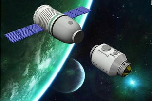

Related pictures
- 


In the space station, astronauts have produced semiconductors, metal materials, glass, ceramics and optical elements with few impurities, small surface defects and excellent quality. In the processing of biological materials, more than 30 kinds of drugs with high quality and curative effect can be produced in space, such as antithrombotic agents-urokinase, anti-influenza agents and antiviral interferon with a purity 100 times higher than that of the ground, pancreatic beta-cells capable of treating diabetes and epidermal growth factor for treating burns. Astronauts can also try to arrange protein molecules according to a predetermined three-dimensional structure to form protein crystals with a purity 10 times higher than that of the ground and superior performance, thus promoting the development of new drugs, disease research and prevention. Under the action of cosmic rays, the genetic genes of the crop seeds carried by the manned spacecraft will change, and a new crop variety with high yield, increased nutrient content or antivirus may be born.
due to the high position of manned spacecraft relative to the earth, astronauts can fully detect the earth's magnetic field, atmospheric ozone layer and ionosphere, which are closely related to the life on the ground, look for oil, mineral deposits and underground water sources, observe the growth of crops, forest fires and changes in snow cover, and try to predict unpredictable natural disasters such as earthquakes.
manned space flight has promoted the development of astronomy, high-energy physics, materials science, automatic control, information, manufacturing technology and other scientific and technological disciplines. it has given birth to new disciplines such as spacecraft structural mechanics, space dynamics, space electronics, and space medicine. it has formed a large number of high-tech industrial groups, enriched human understanding of near-earth space and the moon, and produced significant social and economic benefits. The emergence of space shuttles and space stations has enabled mankind to carry out a number of studies using unique conditions in space such as microgravity, ultra-low temperature, strong solar radiation and vacuum.
the development of manned space technology has also given birth to a series of civilian products. for example, robots used in manned space can assist doctors to perform operations on the ground, and cardiac pacemakers that can be monitored and controlled can be manufactured by using two-way telemetry technology. water treatment systems used on space shuttles have begun to be converted to civilian use in some countries. inspired by ribs on the surface of manned space shuttles that can reduce aerodynamic resistance, rib swimsuits are developed to assist swimmers in picking gold and winning silver.